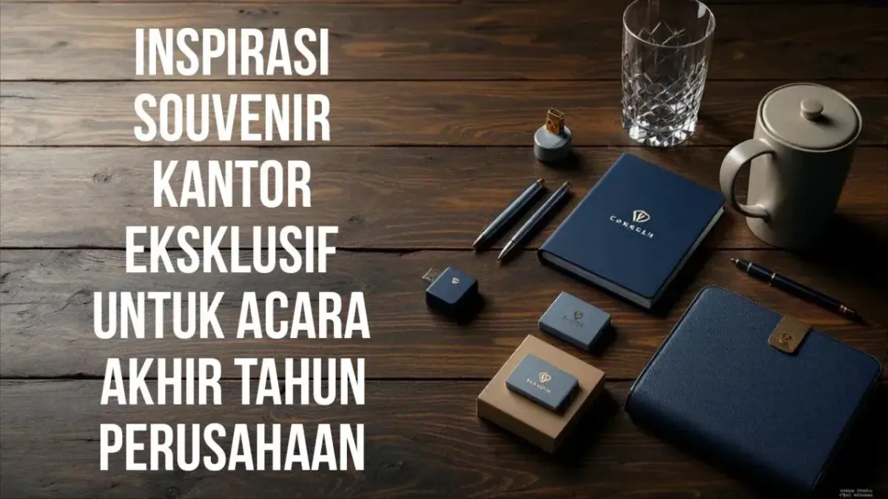

Corporate Gifts ID - Menjelang penutupan tahun buku, dinamika di lingkungan kerja korporat kerap memuncak pada momen refleksi tahunan, seremoni penghargaan kinerja karyawan, serta apresiasi kemitraan strategis. Pada momentum krusial ini, memberikan hadiah bukanlah sekadar rutinitas pembagian barang inventaris kantor. Souvenir kantor eksklusif adalah bentuk manifestasi nyata atas rasa hormat, apresiasi tulus, dan simbol kredibilitas brand yang dipersembahkan kepada klien VIP, dewan komisaris, rekan bisnis, maupun pilar internal perusahaan.
Poin Kunci Souvenir Kantor Akhir Tahun:
- Investasi Hubungan B2B: Hadiah akhir tahun memperkokoh ikatan relasi bisnis dan meningkatkan probabilitas perpanjangan kontrak (retensi klien).
- Peran Vital Packaging: Kotak kaku rigid hardbox dengan penutup magnetik dan pita satin mengubah barang fungsional menjadi hadiah prestisius.
- Personalisasi Tertarget: Segmentasikan hadiah antara level manajemen/C-level eksekutif dengan suvenir apresiasi staf operasional.
- Timeline Pengadaan: Mengamankan slot produksi 4 hingga 8 minggu sebelum puncak musim liburan untuk menghindari keterlambatan logistik.
Makna Simbolik Souvenir Akhir Tahun bagi Perusahaan
Di tengah ketatnya lanskap persaingan bisnis modern, kesan profesional yang ditinggalkan oleh perusahaan Anda pada kuartal keempat akan menentukan nada kemitraan di awal tahun berikutnya. Banyak organisasi menghabiskan ratusan juta rupiah untuk biaya jamuan makan malam atau rapat tahunan akbar, tetapi lupa bahwa cinderamata fisik yang dibawa pulang oleh tamu undangan adalah satu-satunya benda yang akan terus berada di meja kerja mereka selama berbulan-bulan ke depan.
Melalui kurasi souvenir kantor yang tepat, perusahaan tidak hanya menunjukkan rasa terima kasih atas kerja sama yang telah terjalin. Lebih dari itu, setiap lekuk desain, pemilihan material, dan kerapian kemasan menyampaikan pesan implisit bahwa institusi Anda menghargai kualitas tinggi, ketelitian, dan standar estetika tanpa kompromi.
Apa yang Membuat Souvenir Kantor Bernilai Premium?
Terdapat garis batas yang sangat tegas antara merchandise promosi massal (seperti pulpen plastik murah atau kipas kertas yang biasa dibagikan di pameran umum) dengan souvenir kantor bernilai premium. Nilai prestise sebuah hadiah korporat akhir tahun ditopang oleh tiga pilar utama:
- Desain Elegan & Orisinalitas Konsep: Produk tidak terlihat pasaran. Bentuknya proporsional, sentuhan warna korporat diintegrasikan secara subtil (tidak mencolok), dan logo perusahaan dibubuhkan dengan teknik ukiran halus bukan sablon luntur.
- Integritas Kualitas Material: Material yang disentuh langsung memberikan sensasi mewah di tangan. Penggunaan kulit sintetis PU leather grade A, logam stainless steel food-grade SUS 304 berbobot mantap, dan kertas buku agenda tebal bertekstur lembut (tanpa tembus tinta) seketika membedakannya dari produk tiruan murah.
- Nilai Filosofis & Personalisasi: Setiap item memiliki narasi. Penambahan kartu ucapan bertanda tangan pimpinan, ukiran inisial nama penerima, atau konsep limited edition memberikan pengalaman eksklusif yang sangat dihargai oleh penerima.

Kombinasi leather organizer, metal pen grafir laser, dan vacuum tumbler stainless menjadi set cinderamata paling disukai relasi perbankan dan BUMN.
Kekuatan Hardbox Packaging dalam Menciptakan Unboxing Experience
Banyak pembuat keputusan pengadaan sering membuat kesalahan fatal: membeli barang suvenir yang mahal, namun menyerahkannya dalam tas kresek plastik atau kantong spunbond tipis. Padahal dalam psikologi hadiah korporat, persepsi nilai sebuah hadiah 60% ditentukan oleh kemasan pertamanya.
Kemasan rigid hardbox custom memberikan pengalaman multisensori yang dramatis:
- Visual Menawan: Lapisan kertas bertekstur linen, fancy paper, atau velvet yang dipadukan dengan teknik hot print gold/silver foil memantulkan kilau elegan saat kotak pertama kali dilihat di bawah lampu ruangan.
- Bunyi Magnetik yang Mantap: Suara "klik" dari penutup magnet tersembunyi (magnetic closure) memberikan kepuasan taktil yang menegaskan keistimewaan kotak.
- Tatakan Presisi (Custom Foam Insert): Setiap produk di dalam kotak ditopang oleh busa hati (EVA sponge) yang dipotong khusus menggunakan pisau pond atau laser mengikuti lekuk barang. Barang tidak bergeser, tidak terbentur, dan tersaji sangat rapi saat dibuka.
Melalui layanan di Corporate Gifts ID, setiap hardbox dapat dikustomisasi penuh mulai dari warna pantone brand, penambahan pita satin bermerek, hingga lapisan busa penutup bagian atas untuk memastikan keamanan selama pengiriman ke luar kota.
Rekomendasi Souvenir Kantor Eksklusif Paling Diminati
Berdasarkan tren pengadaan B2B beberapa tahun terakhir, berikut adalah pilihan kategori produk yang paling banyak dipesan oleh korporasi terkemuka di Indonesia untuk perayaan akhir tahun:
Executive Stationery Set
Kombinasi pulpen logam berbobot seimbang dengan teknologi rollerball, agenda berbalut kulit sintetis bermagnet, serta card holder kartu nama elegan. Pilihan aman dan selalu terpakai untuk mitra legal, konsultan, dan perbankan.
Smart Drinkware Collection
Tumbler vakum dinding ganda (double-wall vacuum flask) dari bahan stainless SUS 304 food-grade yang mampu menjaga suhu minuman panas atau dingin hingga 12-24 jam, dilengkapi layar indikator LED suhu sentuh.
High-End Productivity Gadget
Power bank berkapasitas 10.000 - 20.000 mAh berlapis bodi aluminium matte, wireless fast charging pad untuk meja kerja, atau flashdisk OTG multifungsi berbalut bahan metal dan kulit sintetis.
Wellness & Executive Lifestyle
Paket reed diffuser aromaterapi beraroma kayu cendana atau lavender menenangkan, lilin aromaterapi berbahan lilin kedelai (soy wax) ramah lingkungan, dan cangkir keramik artisan berlogo deboss emas.
Tabel Komparasi Paket Hadiah Akhir Tahun Korporat
Untuk membantu divisi HRD dan tim Procurement menyusun Rencana Anggaran Biaya (RAB) secara akurat, tabel di bawah merangkum komparasi spesifikasi gift set akhir tahun berdasarkan segmentasi penerima:
| Paket Hadiah | Target Penerima | Komposisi Item Utama | Standar Kemasan | Estimasi Waktu Produksi |
|---|---|---|---|---|
| Executive Platinum Set | Dewan Direksi, Klien Prioritas VIP, Tamu VVIP | Leather Organizer A5, Metal Pen Grafir Laser, Wireless Power Bank, Tumbler SUS 304 | Rigid Hardbox Magnetik + Foam Busa Eva Presisi + Hotprint Gold | 14 - 21 Hari Kerja |
| Professional Gold Set | Manajer Divisi, Rekan Bisnis B2B, Vendor Utama | Notebook Kulit Sintetis PU, Pulpen Metal, Stainless Tumbler 500ml | Hardbox Top-Bottom (Tutup Lepas) + Custom Sleeve Full Color | 10 - 15 Hari Kerja |
| Workplace Productivity Set | Seluruh Karyawan Internal, Anggota Tim Proyek | Buku Agenda Spiral Cover Keras, Pulpen Gel Stylus, Botol Minum Sporty | Custom Corrugated Box Kraft Estetik + Pita Katun Korporat | 7 - 12 Hari Kerja |
| Eco-Luxury Green Set | Lembaga Pemerintahan, Perusahaan Sadar ESG | Tumbler Bambu Vakum SUS 304, Pulpen Serat Bambu, Totebag Kanvas Katun | Wooden Box Kayu Pinus Alami Grafir Laser + Serat Jerami Kering | 12 - 18 Hari Kerja |
5 Tips Strategis Memilih Souvenir Akhir Tahun Tepat Sasaran
Agar investasi anggaran tahunan yang dialokasikan memberikan dampak maksimal dan bebas dari kendala operasional, terapkan 5 kiat berikut:
- Segmentasikan Daftar Penerima dengan Disiplin: Hindari pendekatan "satu barang untuk semua". Kebutuhan cinderamata untuk jajaran direksi perbankan tentu memerlukan spesifikasi berbeda dengan bingkisan akhir tahun untuk ratusan staf kantor lapangan.
- Prioritaskan Fungsionalitas Sehari-Hari: Pilihlah benda yang akan diletakkan di atas meja kerja atau dibawa bepergian dalam aktivitas profesional. Semakin sering barang tersebut dipakai, semakin kuat retensi ingatan penerima terhadap nama baik perusahaan Anda.
- Jaga Proporsi Logo Brand (Subtle Branding): Cinderamata mewah bukanlah papan reklame jalan raya. Hindari mencetak logo perusahaan berukuran raksasa di bagian tengah barang. Terapkan teknik subtle branding berupa ukiran grafir kecil di sudut bawah atau deboss buta (blind deboss) tanpa warna yang tampak sangat anggun.
- Amankan Timeline Pengadaan Lebih Awal: Rentang bulan November dan Desember adalah masa tersibuk bagi seluruh pabrik percetakan dan pengrajin hardbox di Indonesia. Melakukan pemesanan pada bulan September atau Oktober memastikan Anda mendapatkan harga bahan baku yang stabil, ketersediaan stok warna box, serta waktu yang leluasa untuk proses quality control (QC).
- Sisipkan Surat Apresiasi Personal: Nilai sebuah hadiah akan berlipat ganda ketika di dalamnya terselip kartu ucapan berbahan kertas tebal bertekstur, berisi kalimat terima kasih yang tulus dan ditandatangani langsung oleh pucuk pimpinan perusahaan.
Bagaimana Cinderamata Eksklusif Mengunci Retensi Klien & Karyawan
Dalam teori manajemen sumber daya manusia dan relasi pelanggan (CRM), akhir tahun merupakan momentum psikologis saat seseorang mengevaluasi kembali kontribusi dan ikatan kerja sama yang telah berlangsung selama setahun penuh. Hadiah akhir tahun yang dirancang dengan perhatian mendalam membuktikan bahwa manajemen tidak menganggap hubungan tersebut sebatas transaksi angka di lembar neraca keuangan.
Bagi karyawan, souvenir eksklusif menumbuhkan rasa bangga (sense of belonging) dan menurunkan potensi pergantian pekerja (turnover). Sedangkan bagi mitra bisnis, hadiah yang elegan menjaga pintu diplomasi tetap terbuka lebar, mempermudah negosiasi proyek lanjutan, dan memposisikan perusahaan Anda sebagai rekanan bisnis terdepan di kelasnya.